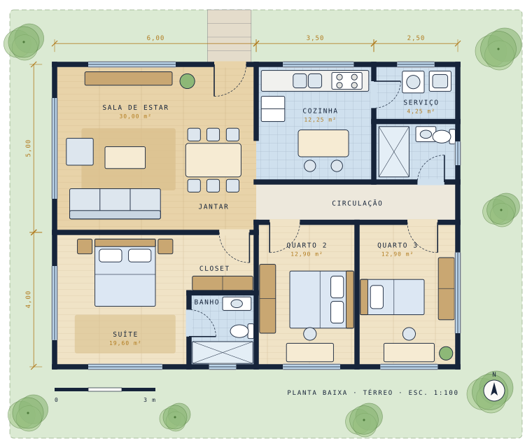
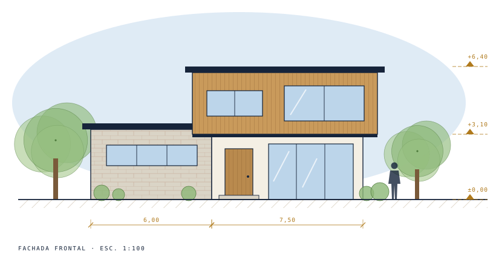
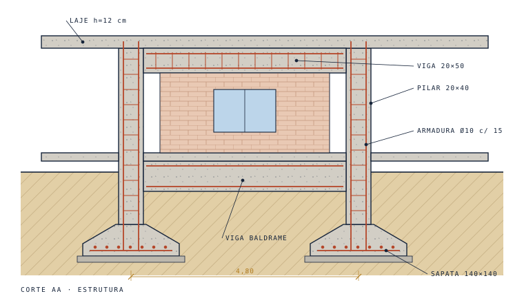
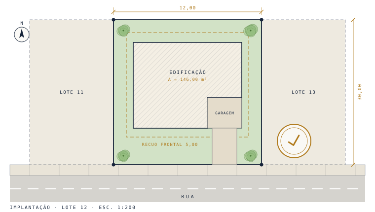

Engenharia para obras civis, indústria e mineração.
Projetos de arquitetura e engenharia, laudos técnicos e regularização de imóveis, do estudo preliminar à entrega da obra. Também adequamos veículos e equipamentos às exigências normativas de operações industriais e mineradoras.
- 06
- frentes de serviço, do projeto ao laudo
- 11
- operações atendidas em mineração e indústria
- 04
- estados com atuação técnica registrada

Da planta à obra
Projetos, laudos e regularização para quem vai construir, reformar ou regularizar um imóvel.

Arquitetura e projetos
Do estudo preliminar ao projeto executivo, com maquete 3D e renders.
Ver serviços →
Estrutura e instalações
Projeto estrutural, fundações, instalações elétricas e hidrossanitárias e PPCI.
Ver serviços →
Laudos e vistorias
Laudo técnico estrutural, avaliação de imóveis e levantamento “as built”.
Ver serviços →
Regularização de imóveis
Projeto para aprovação municipal, averbação de construção, desdobro e REURB.
Ver serviços →Todas as frentes de atuação
Engenharia civil e arquitetura
Projetos arquitetônicos e complementares, laudos e vistorias, regularização de imóveis e acompanhamento técnico de obras, do estudo preliminar à entrega.
Engenharia mecânica
Inspeções técnicas, emissão de laudos, adequação de equipamentos e gestão de manutenção. Avaliação técnica de veículos e máquinas com base em critérios normativos e análise de desempenho operacional.
Engenharia para mineração
Adequação técnica de veículos para operações em ambiente de mina, preparação e mobilização de equipamentos, suporte técnico em campo e organização documental conforme NR-22 e requisitos de cada contratante.
Laudos e inspeções técnicas
Emissão de laudos técnicos com responsabilidade de engenheiro habilitado. Inspeções periódicas em equipamentos, instalações e estruturas, com registro documental e emissão de ART quando aplicável.
Locação e gestão de frotas
Locação de veículos utilitários e 4x4 para operações industriais e mineradoras. Gestão técnica da frota com controle de manutenção, documentação e atendimento a exigências operacionais de cada contratante.
Cursos e treinamentos EAD
Capacitação técnica com foco em normas regulamentadoras e segurança operacional. Formação e atualização profissional em NRs com flexibilidade de horário para equipes e empresas.
Como trabalhamos
Do primeiro contato à entrega, você sabe em que etapa o trabalho está e o que vem a seguir.
-
Consulta inicial
Conversamos para entender sua necessidade, o objetivo do projeto e as restrições de prazo e orçamento.
-
Análise detalhada
Avaliamos o local, o equipamento ou a documentação, além das normas e exigências legais que se aplicam.
-
Proposta personalizada
Você recebe uma proposta clara, com o escopo do trabalho, o valor estimado e o cronograma.
-
Desenvolvimento colaborativo
Desenvolvemos o projeto ou serviço com a sua participação, validando as decisões a cada etapa.
-
Apresentação
Apresentamos o resultado de forma visual e clara, para você conferir cada detalhe antes da execução.
-
Aprovação e entrega
Fazemos os ajustes finais e entregamos a documentação técnica, com ART quando aplicável.
Onde já atuamos
A Soares Serviços Consultoria e Locação possui histórico de atuação técnica em operações industriais e mineradoras de grande porte, com entregas documentadas nas áreas de adequação de equipamentos, inspeção técnica e mobilização operacional.
Inspeções técnicas e adequação de equipamentos e veículos conforme requisitos normativos e exigências específicas de cada contratante.
Preparação técnica e mobilização de frotas para operações em mina, com documentação estruturada para aprovação em portais de contratantes (NR-12 e NR-22).
Elaboração de laudos técnicos, ARTs e prontuários com responsabilidade de engenheiro habilitado para operações industriais e projetos residenciais.
Responsabilidade técnica em todo o processo
Assumimos responsabilidade técnica na adequação documental e operacional de equipamentos e frotas, com acompanhamento estruturado ao longo de todo o processo de validação junto à contratante.
Trabalhamos com método definido, análise criteriosa e acompanhamento contínuo para reduzir retrabalho, atrasos e não conformidades técnicas.
- Acompanhamento do status de aprovação técnica junto ao contratante.
- Adequação física de equipamentos com suporte técnico em campo.
- Gestão documental com controle de vigência de NRs e ARTs.
Entre em contato com nossa equipe técnica.
Atendemos demandas de engenharia civil e mecânica, projetos para mineração e regularização de imóveis. Fale com nossa equipe e receba uma análise técnica da sua necessidade.